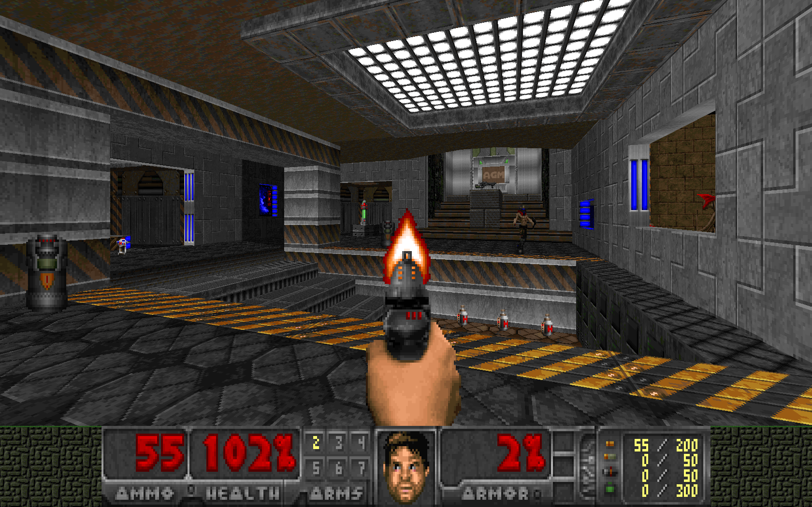
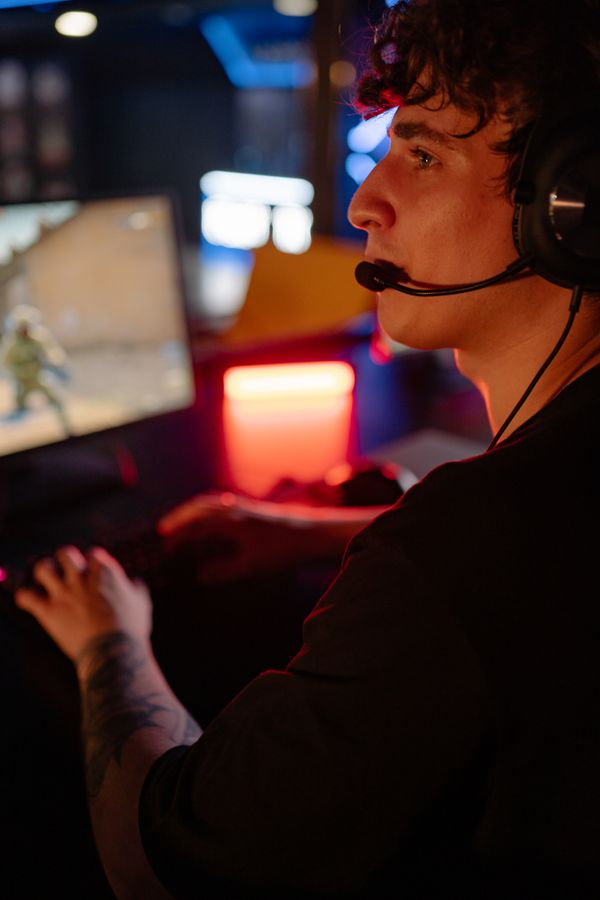

01 · УПРАВЛЕНИЕ OBS
Режиссируйте весь эфир.
Меняйте сцены, источники и входы, запускайте запись и трансляцию, сохраняйте повторы — без поисков по окнам OBS.
Хватит покупать кнопки. Используйте свои.
Никаких лишних коробочек на столе и паники с Alt+Tab. Нажмите клавишу — StreamNumDeck разберётся с OBS, звуком, программами, макросами и сценариями.
Играбельное демо · нампад уже в эфире
Здесь настоящий кадр Freedoom, реальная фотография веб-камеры и те же действия, которые назначаются в программе. Попробуйте КАМ, МИК, ЗАПИСЬ, В ЭФИР или СЦЕНАРИЙ.


Камера скрыта
Физический нампад здесь тоже работает
Медиа в демо: проект Freedoom · фото веб-камеры — Yan Krukau / Pexels · иконки — Lucide
Весь стримерский loadout
Руки остаются на клавиатуре, а внимание — там, где оно нужно: в игре, разговоре и общении со зрителями.
01 · УПРАВЛЕНИЕ OBS
Меняйте сцены, источники и входы, запускайте запись и трансляцию, сохраняйте повторы — без поисков по окнам OBS.
02 · ЗВУК
Выключайте микрофон, управляйте общим звуком и громкостью отдельных программ.
03 · ДВА СЛОЯ
22 × 2NumLock мгновенно превращает те же клавиши во второй независимый пульт.
04 · НЕ ТОЛЬКО СТРИМЫ
Программы, файлы, папки и сайты. Горячие клавиши и макросы. Соберите рабочий процесс вокруг своих инструментов.
05 · ВСЁ ЛОКАЛЬНО
Без аккаунта, рекламы и телеметрии. Профили, настройки, значки и журналы хранятся на вашем компьютере.
Одна клавиша умеет многое
Объединяйте действия OBS, звук, системные команды, клавиатурные макросы и настраиваемые паузы в одну надёжную последовательность.
Все доступные действияОт нуля до первого действия
Выберите установщик или портативный ZIP для Windows.
Выберите кнопку нампада и действие для неё.
Нажимайте её из любой программы — переключать окна не нужно.
Полезно знать
Windows 10 версии 1903 или новее либо Windows 11. Рекомендуется цифровой блок клавиатуры; блок из шести навигационных клавиш можно перехватывать отдельно.
Да. StreamNumDeck использует интерфейс OBS WebSocket 5.x, встроенный в актуальные версии OBS Studio.
Нет. Можно выбрать обычный установщик для текущего пользователя или скачать портативный ZIP, распаковать его и запустить StreamNumDeck.exe.
Программа бесплатна для личного и другого разрешённого некоммерческого использования. Для коммерческого использования требуется отдельное разрешение.
Установщик пока не подписан цифровой подписью. Скачивайте его только из официального репозитория GitHub и при необходимости проверяйте опубликованный SHA-256.
Свободные клавиши уже готовы
Windows 10–11 · Установщик или портативная версия · 22 языка · Без телеметрии